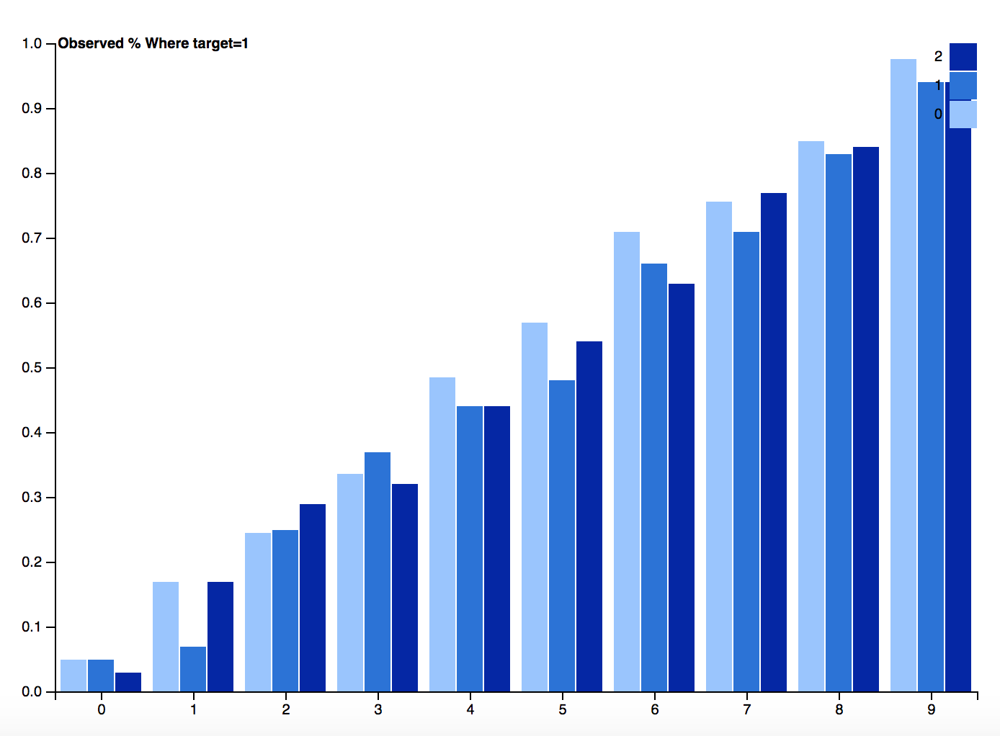
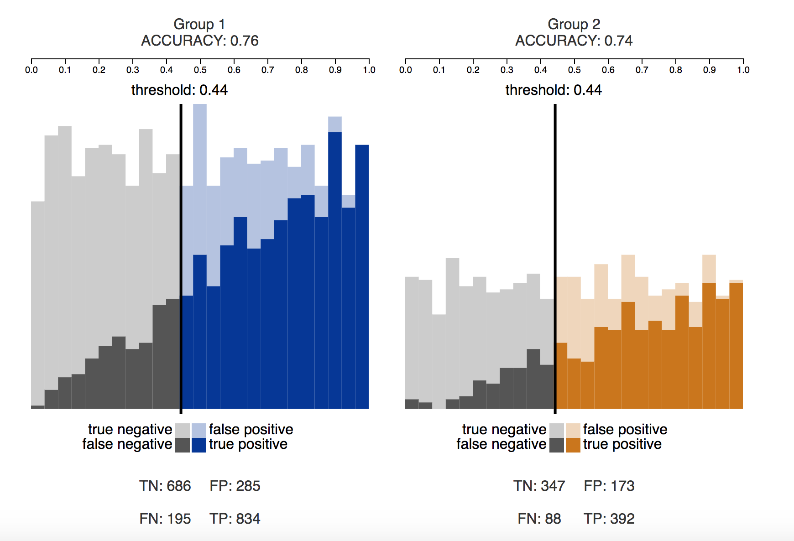
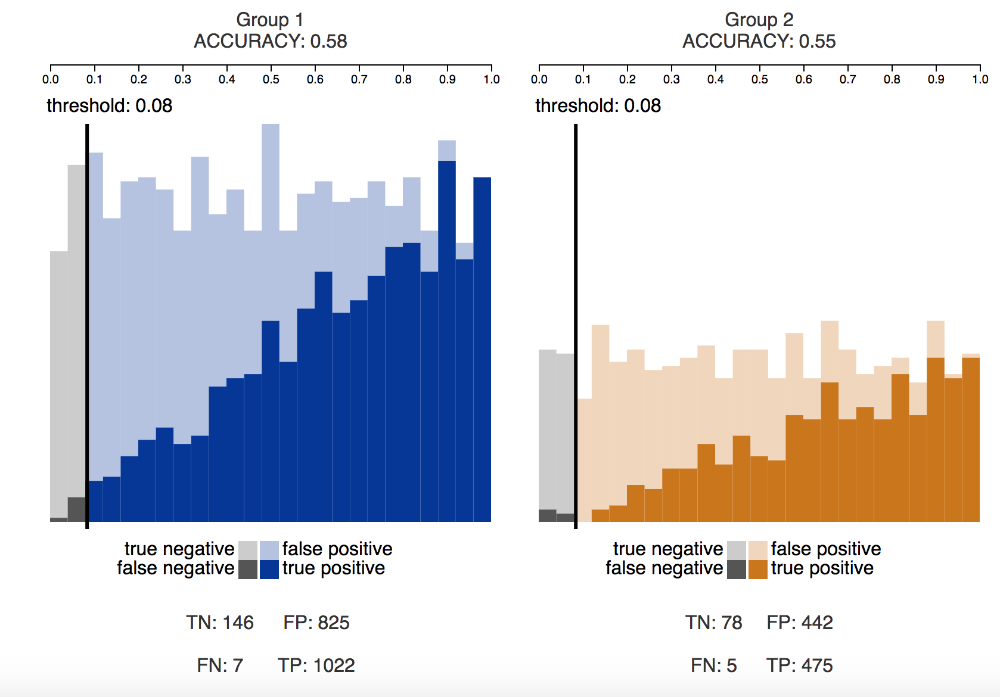
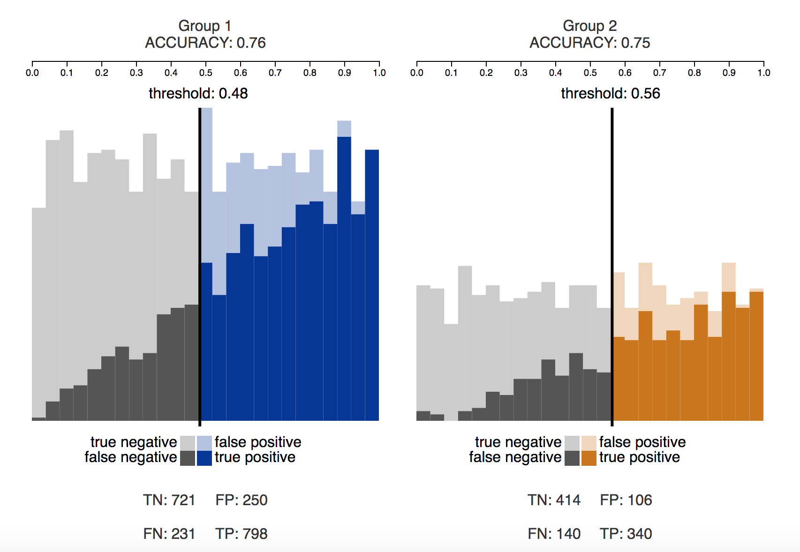

Given a binary classification learner that outputs scores, the learner’s predictions are said to be calibrated if and only if the predicted score for any individual is roughly equivalent to the probability that the true value of the individual’s class is POSITIVE.
Calibration is a somewhat more complicated notion of fairness for predictors. Because calibration is not a property of the thresholds set on a prediction score, we do not use calibration as a possible constraint for optimization. Instead, we devote a separate visualization to examining calibration of prediction scores
Statistical parity is a relatively common definition from statistical analysis, examining rates of predicted POSITIVE samples from different groups. Statistical parity does not take into account accuracies of these predictions, simply the portions of individuals predicted to be part of the POSITIVE class.
STATISTICAL PARITY →
Predictive equality or Equal opportunity is equivalent to an equal true positive rate across the groups being compared
EQUAL OPPORTUNITY →
Equalized odds is a further constraint added to equal opportunity. Under equalized odds, both the true positive rate and false positive rate must be equal across groups that are being compared.
EQUALIZED ODDS → AND
Predictive parity looks at correct predictions of membership in the POSITIVE class. Under a predictor that satisfies predictive parity, an individual that is predicted to be a member of the POSITIVE class is equally likely to be a correct prediction regardless of group membership.
PREDICTIVE PARITY →

Instructions:
1. Use the drop-down menus to select the desired protected field, values for group 1 and group 2 and the prediction model/scores.
2. Click the Visualize/Reset button.
3. Experiment with the definition buttons to explore different threshold settings.
4. Drag thresholds manually to investigate the statistics.
X axis shows binned prediction score values
Y axis shows counts of data points
|
Group 1
|
Group 2
|
|
Instructions:
1. Use the drop-down menus to select the desired protected field, and the prediction model/scores.
2. Select the number of bins (>=2) to see how calibrated the data is. Each bin size is 100/nbrOfBins %
3. Click on the Analyze Calibration method to see the Calibration stats.
4. Experiment with the number of bins and scoring method to see how calibration changes.
X axis shows bin number
Y axis shows the percentage of data points for each group in the bin when target = 1